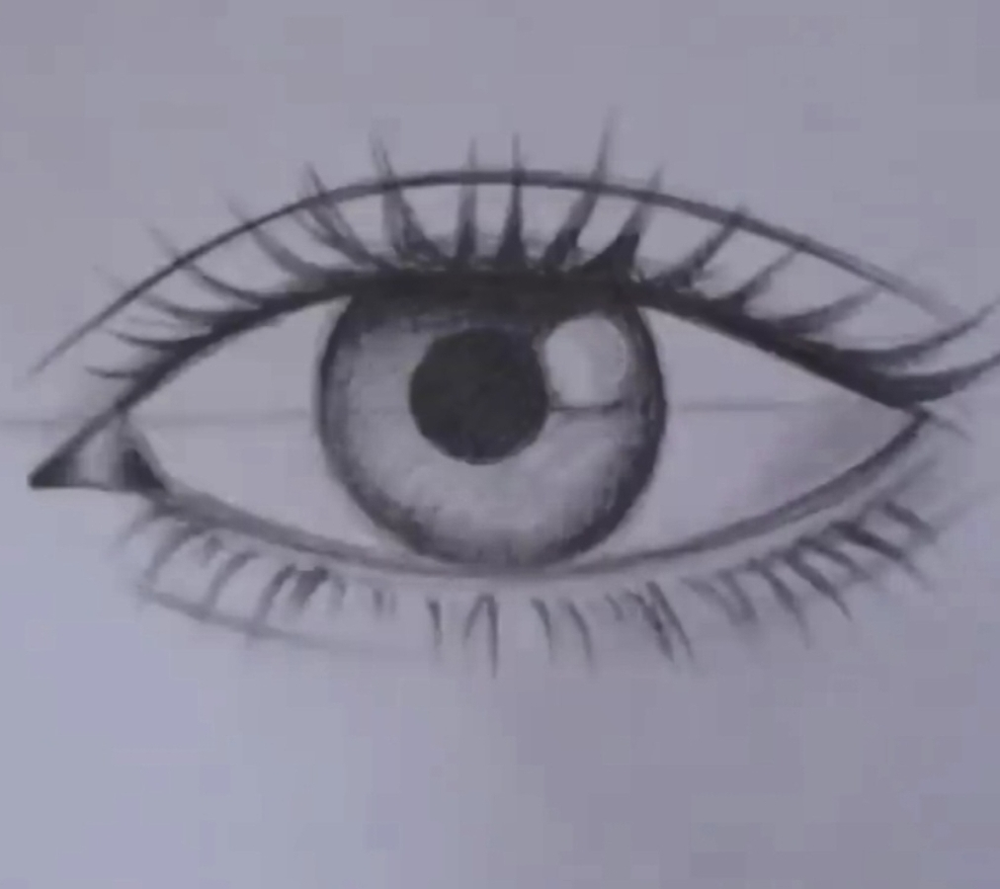

Course #3: Drawing the Eyes
Welcome to this course! Now that you’ve practiced drawing the nose and lips, it’s time to bring more expression to your portraits by learning how to draw eyes. By the end of this lesson, you’ll be able to recreate the eyes you see below with confidence. Let’s get started!

Step #1: Draw a circle
Start by drawing a small circle. This represents the iris and serves as the base for your eye drawing.
Step #2: Draw a horizontal line
Split the iris in two and extend the line to the right and left of the iris.
Step #3: Draw the eyelids
Extend the eyelids from each end of the line, covering the iris, to the other end of the line, make the lines darker to give a more structured outline for the eye.
Step #4: Add a line above the eyelids
This line shows where the upper eyelid ends.
Step #5: Draw circles inside the iris
The first circle represents the dark part of the iris, and the outer circle shows the reflection. Shade them in.
Step #6: Add a line under the bottom eyelid
This defines where the bottom eyelid ends.
Step #7: Shade the iris further

Enhance the depth of the iris by shading it darker at the top and around the sides of the circle. This technique adds realism by simulating the shadow cast by the eyelid and the natural gradation in the iris. Take your time to blend the shading smoothly, ensuring a soft transition into the lighter areas.
Step #8: Add Eyelashes
Draw eyelashes along the top and bottom eyelids, paying attention to their natural direction and curve to match the eye's dimension and perspective. On the top eyelid, eyelashes are typically longer and curve upwards, while on the bottom eyelid, they are shorter and curve slightly downwards. Take care to vary their length and spacing for a more realistic effect.